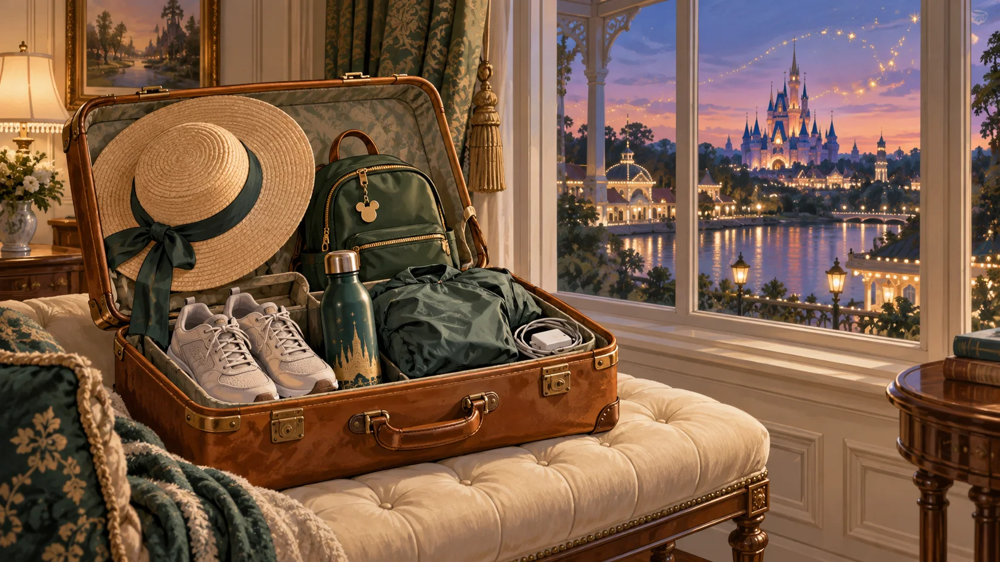

A relaxed trip starts here
Check this page the evening before each day. We’ll list the main meeting times so the time in between is yours to enjoy.
Orlando activities use Orlando local time. Flight times and airport transfers need their own confirmed local-time instructions.
🕰️ Your daily plans
Your schedule is on its way ✨
Travel dates, daily plans, meeting places and times are still being finalized. Nothing here is a confirmed reservation yet.
🏨 Your stay
Your hotel and room details will appear here once selected for sharing.
Airport rides, hotel transfers and park pickup points will be listed in your daily plans. No rental car is planned.

🎒 Bring along
- Travel ID, medications and essential documents in your carry-on.
- Comfortable walking shoes, breathable clothes, swimwear and a light rain layer.
- Refillable water bottles, sun protection and daily essentials.
- Your phone, charging cables and park band when issued.
- Children’s comfort items and enough essentials for travel day.
Planned for each family: a shared charging station and a power bank with Apple and Android cables. Strollers and extra supplies are being organized separately.
💬 Who to ask
A trip coordinator and backup contact will be shared before departure. VIP guides will lead the booked tour periods; separate arrangements cover the rest of the day.
Early hotel returns and the later park group will have separate meeting instructions. Follow your assigned group’s confirmed plan.
If you’re running late, contact the designated coordinator for the catch-up plan. Children must always stay with their responsible adult.
This is a public family guide. Personal documents and sensitive details should be shared privately.